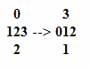

Brain Metrix
Brain MetrixBrain Metrix
| Brain Exercices | Memory Game | Reflex test | Free Chess Game | IQ Test | Concentration Game | IQ Scale |
Brain Metrix is an educational website dedicated to brain training programs; you can achieve optimum fitness by visiting your gym,
and engaging in a brain fitness program that is both fun and stimulating. Here you stretch and train your brain to the limit, you can train and test your memory
or test your reflexes or even your brain creativity and improve it and much more. Just check the menu on the left for a full list of our brain training games and
activities which are all loads of fun.
You will find some brain fitness workouts that can help your mind process information more quickly,
and more efficiently, as well as the ability to perform multiple tasks at the same time. You can get help to concentrate more and increase your brain reflection speed;
you will find simple but very effective brain training games and exercises like solving math problems to achieve greater mind fitness. You may be the smartest person in
the world and you don't even know it. If you're not the most intelligent person in the world yet, then, welcome to your gym!
Included you will find some famous brainteasers, and puzzles that are fun and good for brain stretching exercise. Below is a
list of all our brain exercises described in more detail:
Concentration is very critical to the brain, because you can't expect that much from a distracted mind.
This concentration test is a little bit hard, but can be a good workout and help your brain gain the ability to concentrate and deal with problems solving more efficiently. The complexity of the game depends on the level you choose, you can start with the lowest level and as you learn the rules of the game you can go up to the next level in this exercise. Check the instructions all the way at the bottom to learn how to play this brain concentration game.
Click on one of the buttons in the playing field to subtract 1 from that button's value, as well as from the values of the 4 surrounding ones. By clicking on the button, it changes the numbers in all four directions (top, bottom, left and right). If the number in one of these directions, is already 0, then it goes back to 3, so you don't want to click on a number if one of those numbers to the left, right, top or bottom is already zero.
Objective:To get all buttons to show '0'.Example (a click on the "2" in the middle):
As soon as you click on "New", a new game starts.
The score starts counting down from 1000.
The quicker you finish, the higher your score will be.
Undo and Hint as well as using more Clicks than the current difficulty setting requires,will all make you lose a couple points.
If you are having difficulty following these instructions, start on "huh what" level and it will become clearer on what you need to do.